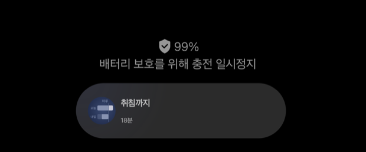

밤부터 아침까지
«오늘 당겨 쓰면» 쓰는 법 — 화면 보는 법과 하루 순서.
화면은 밤 9시 45분 기준. 기상 6시 30분 · 수면 7시간 30분, 준비 30분 · 회사까지 1시간 20분으로 맞춘 상태예요.
이 앱이 하는 일
기상 시각과 자고 싶은 시간을 정해 두면, 지금 누우면 몇 시에 일어나게 되는지를
밤새 상단 바에 띄워 줘요. 누울 때 버튼을 한 번 누르면 알람까지 잡혀요.

잠금화면 아래에 이렇게 떠요. 1분마다 다시 그려서 숫자는 늘 지금 기준이에요.
한 번 돌려 보기
밤에 «목표대로» 를 누르고 아침에 알람을 끄기까지 — 21초.
하루 순서
메인 화면
화면은 두 층이에요. 위는 밤을 그린 타임라인, 아래는 지금 남은 시간과 누울 때 누르는
단추. 목표도 회사 도착도 따로 목록을 두지 않고 타임라인이 다 말해요.
위 — 타임라인
아래 — 남은 시간과 단추
누운 뒤
낮에 열면
알람
오늘 밤 알람 열어 보기
울릴 때
폰을 켜 두고 있었다면 전체화면 대신 위에서 알림이 내려와요. 소리는 똑같이 나요.
오늘만 취침 시간 조정
타임라인의 «목표 취침» 줄 오른쪽 «조정 ›» 을 눌러요. 바꿔 두면 그 줄이 앰버로 바뀌고
이름 뒤에 «오늘만» 이 붙어요.
설정
머리줄 오른쪽 톱니로 들어가요. 목표 · 출근 · 알람 · 취침할 때 · 바, 다섯 묶음이에요.
목표와 출근
출근 시각과 알람
취침할 때와 바
알람음 고르기
이럴 때 이렇게
처음 켰을 때
- 알림 권한을 허용해요.
- 설정 › 목표에서 몇 시에 일어날지와 얼마나 잘지를 정해요. 목표 취침은 계산돼서 나와요.
- 설정 › 출근에서 준비 시간과 회사까지 를 정해요. «가장 빠른 출근» 이 바로 나와요.
- «상단 바에 띄우기» 를 켜요. 안 보이면 설정 › 바 › «상단 바 표시 설정» 에서 기기 쪽 표시를 켜요.
- 설정 › 알람에서 소리를 눌러 마음에 드는 걸 골라요. 목록에서 바로 들어볼 수 있어요.
제때 자는 밤
- 상단 바에 «취침까지 1시간 20분» 이 떠요.
- 누울 때 목표대로 를 눌러요. 기상 6시 30분에 알람이 잡혀요.
- 화면이 어두워지고, 상단 바는 잔 시간을 세기 시작해요.
늦어질 걸 미리 알 때
- 타임라인의 «목표 취침» 줄에서 조정 › 을 눌러 오늘 누울 시각을 정해요.
- 기상도 그만큼 밀려요 — 하루를 통째로 미루는 거예요.
- 내일은 원래 목표로 돌아와요. 오늘 안에 되돌리려면 그 판의 «루틴대로» 를 눌러요.
이미 늦어버렸을 때
- 지금부터 를 눌러요. 지금 기준으로 목표 수면 시간만큼 자고 일어나요.
- 버튼 위 배지가 목표보다 얼마나 늦어지는지 알려줘요 — «목표 −1시간 14분».
- 회사에 몇 시에 닿는지도 그 아래에 같이 나와요.
아침
- 알람이 울리면 손잡이를 오른쪽 끝까지 밀어요.
- 30분 뒤 두 번째 알람이 또 울려요. 필요 없으면 설정에서 0으로 두면 안 만들어요.
- 아무도 안 끄면 5분 뒤 스스로 멈춰요.
알람 하나만 빼고 싶을 때
- 알람 줄의 삭제 를 눌러요. 한 번 물어봐요.
- 오늘 밤만 빠져요. 내일은 다시 잡혀요.
- 잘못 지웠으면 «지운 알람 다시 걸기» 를 눌러요.
설정 한눈에
| 어디 | 무엇 | 기본값 |
|---|
| 목표 | 몇 시에 일어나기 | 오전 6시 30분 |
| 얼마나 자기 | 7시간 30분 |
| 알람 | 소리 | 삐삐삐삐 |
| 점점 크게 | 10초 동안 |
| 진동 | 계속 |
| 끄는 법 | 밀어서 |
| 두 번째 알람 | 30분 뒤 |
| 저절로 멈춤 | 5분 |
| 취침할 때 | 화면 어둡게 | 켬 · 5% |
| 출근 | 준비 시간 | 30분 |
| 회사까지 | 1시간 20분 |
| 출근 시각 | 오전 9시 |
| 바 | 밤 시작 | 오후 9시 |
| 상단 바에 띄우기 | 하루 종일 |
안 될 때
| 증상 | 볼 곳 |
|---|
| 상단 바에 안 떠요 | 설정 › 바 › «상단 바 표시 설정». 갤럭시는 개발자 옵션의
«모든 앱의 실시간 정보 보기» 도 켜야 Now Bar 에 올라가요. |
| 밤새 있다가 사라져요 | 기기 설정 › 배터리에서 이 앱을 «제한 없음» 으로 둬요. |
| 알람이 안 울려요 | 앱을 강제 종료하면 걸어둔 알람이 지워져요. 앱을 한 번 열면 다시 걸려요. |
| 알람 화면이 전체로 안 떠요 | 폰이 켜져 있으면 위에서 내려오는 알림으로 떠요. 잠겨 있을 때만 전체화면이에요. |
만드는 쪽 이야기 — 빌드·구조·Now Bar 를 뜨게 한 과정은 docs/dev.md 에 있어요.